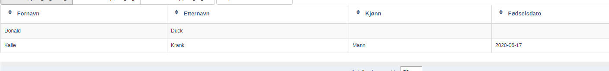
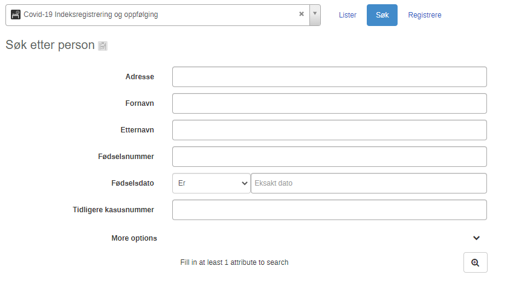
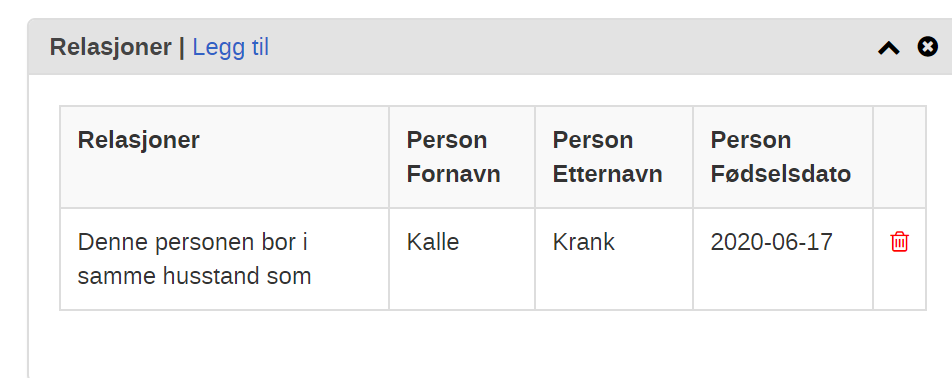

Release notes 04.09.2020 (1.1.0)
Fødselsdato er søkbar og vises i listene

Man kan nå søke etter nærkontakter og tilfeller ved å bruke fødselsdato som søkefelt

Etternavn og fødselsdato vises nå i relasjoner

Tilpasset nærkontakt-registrering til nye karanteneregler fra FHI (alle skal i karantene, ikke kun hustandsmedlemmer)
Designet gir mulighet til å velge enten karantene eller oppfølging for nærkontakter uavhengig av om de er nærkontakter eller husstandsmedlemmer. Denne løsningen gir mer fleksibilitet og lar smittesporer i større grad vurdere og velge seg om personen skal registreres som i karantene eller under oppfølging.

Små endringer i tekstene
For eksempel:
- “Dato for første kontakt med indekstilfelle” endret til “dato for siste kontakt”.
- Tilpasning til de nye karanteneregler
Slettet feltene om Husstand og antall husstandsmedlemer
Dette feltet hadde ingen funksjon utover å minne brukeren på å registrere nærkontaktene.
Reisehistorikk i utlandet har nå et landliste

Valg i nedtrekksliste for kjønn inkluderer nå “Ikke kjent”

Arbeidslistene er endret
“Arbeidsliste for oppfølging av nærkontakter i dag” viser nå alle nærkontakter med en aktiv (ikke fullført) oppfølging, og alle med en oppfølging som er planlagt utført innen dagens dato.
Bredden på søkeresultat modal endret til 75% av skjermen istedenfor 600px
Feil i indikator rettet
Oversikt over personer i isolasjon, karantene og oppfølging.
Bug i kontakt registrering
Det var ikke mulig å registrere flere kontakter samtidig på en person av flere brukere. Dette er nå rettet.